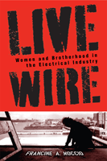

<body bgcolor="#FFFFFF" text="#000000" link="#0000FF" vlink="#CC0000" alink="#CC0000"><center><hr width="350" size="1" align="center" noshade>Sisters of The Brotherhood struggle for equality<hr width="350" size="1" align="center" noshade><p><a href="https://cdcshoppingcart.uchicago.edu/Cart/ChicagoBook.aspx?ISBN=9781592137374&&PRESS=temple" target="_top">Buy this book!</a> | <a href="https://cdcshoppingcart.uchicago.edu/Cart/Cart.aspx?PRESS=temple" target="_top">View Cart</a> | <a href="https://cdcshoppingcart.uchicago.edu/Cart/Cart.aspx?PRESS=temple" target="_top">Check Out</a></p><p></p></center><!--none//--><h1>Live Wire</h1>
<H2>Women and Brotherhood in the Electrical Industry</H2>
<h3>Francine A. Moccio</h3>
<P>cloth 1-59213-737-7 $65.50, Aug 09, <FONT COLOR=#990033>Available</FONT>
<br>paper 1-59213-738-5 $31.95, <FONT COLOR=#990033>Available</FONT>
<br>Electronic Book 1-59213-739-3 $31.95 <FONT COLOR=#990033>Available</FONT>
<BR> 288 pp
6x9
9&nbsp;tables 8&nbsp;figures
</P><BLOCKQUOTE><I>"</i>Live Wire<i> is the story of every group of outsiders who has ever tried to enter the world of insiders, of women braving an all-male kingdom, and of unions that cannot succeed without women�and vice versa. In telling the stories of women electricians, Francine Moccio gives us a universal human story, an expos� of why women are still only two percent of the building trades despite thirty years of trying, and a key to the mystery of why Americans are still seventy percent more likely to end up old and poor if they are female. If President Obama wants to solve the problems of poverty and our crumbling bridges and highways at the same time, he should read this book and insist that women work side by side with men. And if anybody thinks for a moment the women's movement is over, he or she should go right out and buy </i>Live Wire<i>."</I>
<BR>&#151<B>Gloria Steinem</B></I></BLOCKQUOTE>
<p>In <i>Live Wire</i>, Francine Moccio brings to life forty years of public policy reform and advocacy that have failed to eliminate restricted opportunities for women in highly paid, skilled blue-collar jobs. Breaking barriers into a male-only occupation and trade, women electricians have found career opportunities in nontraditional work. Yet their efforts to achieve gender equality have also collided with the prejudice and fraternal values of brotherhood and factors that have ultimately derailed women's full inclusion.</p>
<p>By drawing instructive comparisons of women�s entrance into the electricians� trade and its union with those of black and other minority men, Moccio�s in-depth case study brings new insights into the ways in which divisions at work along the lines of race, gender, and economic background enhance and/or inhibit inclusion. Incorporating research based on extensive primary, secondary, and archival resources, <i>Live Wire</i> contributes a much-needed examination of how sex segregation is reproduced in blue-collar occupations, while also scrutinizing the complex interactions of work, unions, leisure, and family life.</p>
<BR>&nbsp;<h2>Excerpt</h2><P>Excerpt available at <a href="http://www.temple.edu/tempress">www.temple.edu/tempress</a></p>
<BR>&nbsp;<h2>Reviews</h2>
<p><I>"In this groundbreaking new book, Francine Moccio gives a detailed account of a side of women�s work and a chapter of women�s and labor history most people know very little about."</I>
<br>&#151<b>Marian Wright Edelman</b>, President, Children�s Defense Fund
<p><i>"This volume provides an in-depth view of the International Brotherhood of Electrical Workers and the Electrical Contractors' Association....Moccio examines reasons for women's inclusion in skilled trade occupations. Summing Up: Highly recommended." </i>
<br>&#151<b><i>CHOICE</i></b>
<p><i>"Compelling interviews with the pioneering women of Local 3 give considerable zest to </i>Live Wire<i>. Moccio�s ability to select stories that encapsulate complex social and psychological issues greatly enhances the book as a teaching text."</i><br>&#151<b> <i>Labor Studies Journal</i></b>
<p><i>"</i>Live Wire<i> provides a full and exhaustively detailed history of the presence of women in the construction electrical trade, discussing and illustrating the enormous challenges that female electricians still face�. A good measure of the fascination of this book flows from the sheer novelty of the subject matter, which is due largely to the structure and traditions of the various unions associated with the electrical industry. Moccio deftly peels back the layers of history one by one, so that the reader is left with a solid grasp of the entire industry, its unions, and how they have evolved together, while still highlighting the thread of female experience throughout�. [An] empowering understanding of the struggles of women in a field that would rather you remain ignorant." </i><br>&#151<b><i>Feminist Review</i></b>
<p><i>"Moccio�s unique access and insight into the culture of Local 3 offer a gift to the reader, because her insider description of the union�s shrewd system of 'social clubs' is an effective starting point for understanding the permanency of the industry�s paternal hierarchy.... </i>Live Wire<i> is one of those unique books that appeals to both the academic and the casual reader, mostly because its subject matter is so engaging and the richness of the interviews keeps the pages turning. Moccio�s ethnographic work is qualitative research done well, which should appeal to any researcher and student of identity politics, gender studies, or occupational culture." </i><br>&#151<b><i>Perspectives on Work </i></b>
<p><i>"[This] detailed ethnography of New York's IBEW Local #3 helps us to understand why it was so difficult for women to succeed (in large numbers) in the brotherhoods.... Moccio provides an in-depth analysis.... [Her] training as an anthropologist enables her to provide a fine-tuned description of workplace culture in the electrical trades and how gender norms operate to disadvantage women within that culture." </i><br>&#151<b><i>New Labor Forum</i></b>
<p><i>"Francine Moccio�s historical overview and ethnographic case study reveals the deeply embedded barriers to women seeking integration into skilled electrical trades�. This is an important book, rich in historical accounts and ethnographic detail. The quotations from interviews are most helpful and insightful�. The book is one that should be read and discussed by scholars and students in the field."</i><br>&#151<b><i>Contemporary Sociology</i></b>
<p><i>"</i>Live Wire<i> will provoke debates in the classroom and within the labor movement text."</i><br>&#151<b><i>Work and Occupations</i></b>
<p><i>"Moccio's exploration of the historical patterns of union organization, fraternalism, race, and gender makes her book a very valuable contribution to labour studies�</i>Live Wire<i> represents worthwhile reading for anyone interested in issues of women and work, the social meaning of union structure, and the construction trade, past and present." </i>
<br>&#151<b><i>Labour/Le Travail</i></b>
<p><i>"The author's research methods are extensive and varied.... [Moccio] has contributed to this important body of literature with her level of detail in presenting the case of Local 3, with data that does more than delve into the experiences of women in the building trade as previous research has done.... </i>Live Wire<i> contributes to research on women in non-traditional occupations and on diversity within unions, and it would be useful to those conducting research in these areas because of its rich ethnographic data and extensive reference section."</i><br>&#151<b><i>Industrial & Labor Relations Review</i></b>
<BR>&nbsp;<h2>Contents</h2><P>
Acknowledgments
<br>Introduction: Getting Wired
<br>1. Brotherhood: The History
<br>2. A Closer Look at Local 3
<br>3. The Struggle to Become Electricians
<br>4. On the Electrical Construction Work Site: The Sexual Charge
<br>5. Race for the Brotherhood: The Ironies of Integration
<br> 6. A Club of Her Own
<br>Conclusion: Getting Women Down to the Job Site
<br>Appendix A
<br>Appendix B
<br>Appendix C
<br>Appendix D
<br>Notes
<br>Selected References
<br>Glossary
<br>Index
</P><BR>&nbsp;<H2>About the Author(s)</H2>
<table><tr><td valign="top"><img src="/tempress/authors/1955_au1.gif" height="90" width="75"></td><td width="100%" valign="middle"><p>For the past twenty years, <b>Francine A. Moccio</b> directed Cornell University�s Institute for Women and Work (IWW) and co-directed, with Betty Friedan, the New Paradigm project on work/life and family issues at Cornell�s IWW funded by the Ford Foundation. She is now a consultant for the Feminism and Legal Theory Project at Emory University Law School as well as for New York based and national women�s organizations.</P></td></tr></table>
<BR><H2>Subject Categories</H2>
<p><A HREF="/tempress/women.html" TARGET="_top">Women's Studies</a>
<BR><A HREF="/tempress/labor.html" TARGET="_top">Labor Studies and Work</a>
<BR><A HREF="/tempress/social.html" TARGET="_top">Community Organizing and Social Movements</a>
</p>
<p align="center"><a href="https://cdcshoppingcart.uchicago.edu/Cart/ChicagoBook.aspx?ISBN=9781592137374&&PRESS=temple" target="_top">Buy this book!</a> | <a href="https://cdcshoppingcart.uchicago.edu/Cart/Cart.aspx?PRESS=temple" target="_top">View Cart</a> | <a href="https://cdcshoppingcart.uchicago.edu/Cart/Cart.aspx?PRESS=temple" target="_top">Check Out</a></p><p><font face="Arial" size="1"><a href="copyright.html" onMouseOver="window.status='Web Copyright Policy';return true;" onMouseOut="window.status=''" title="Web Copyright Policy">&copy;</a> 2015 <a href="http://www.temple.edu" target="new" onMouseOver="window.status='Link to Temple University home page';return true;" onMouseOut="window.status=''" title="Link to Temple University home page">Temple University</a>. All Rights Reserved. http://www.temple.edu/tempress/titles/1955_reg.html</font></p>